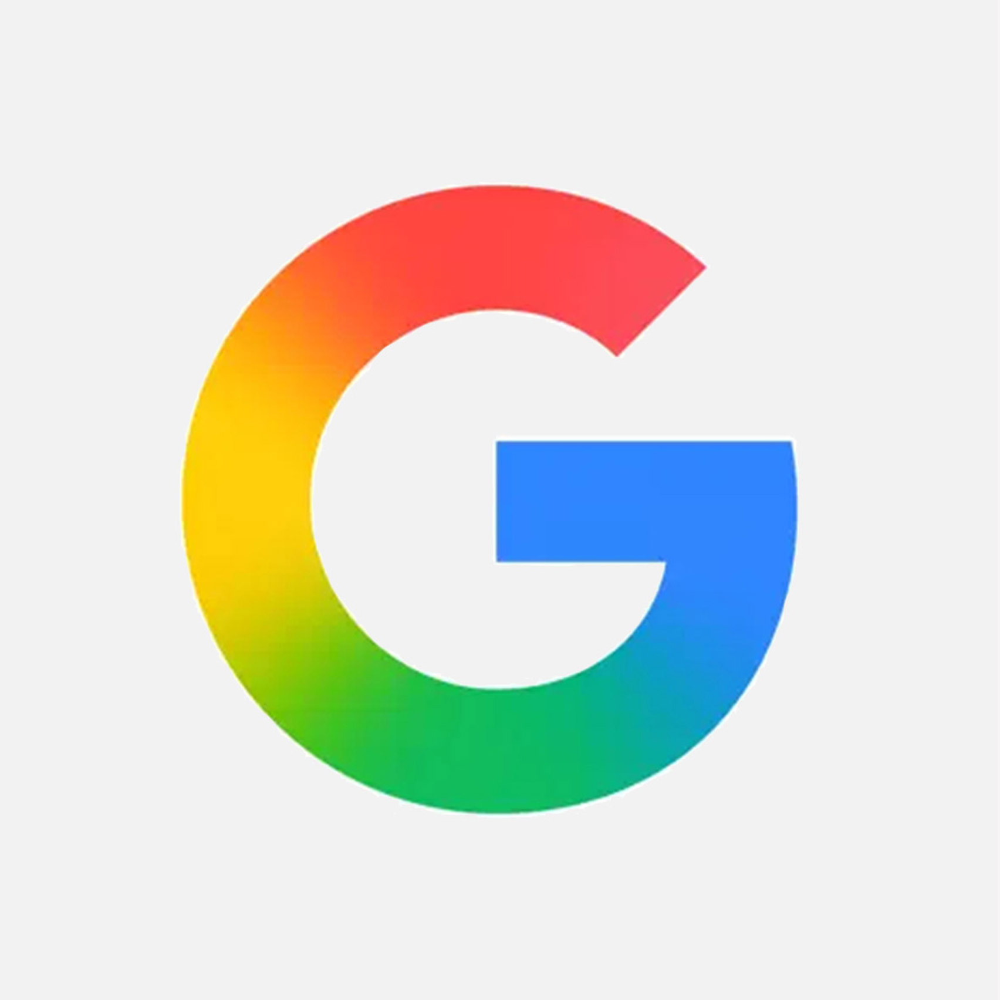
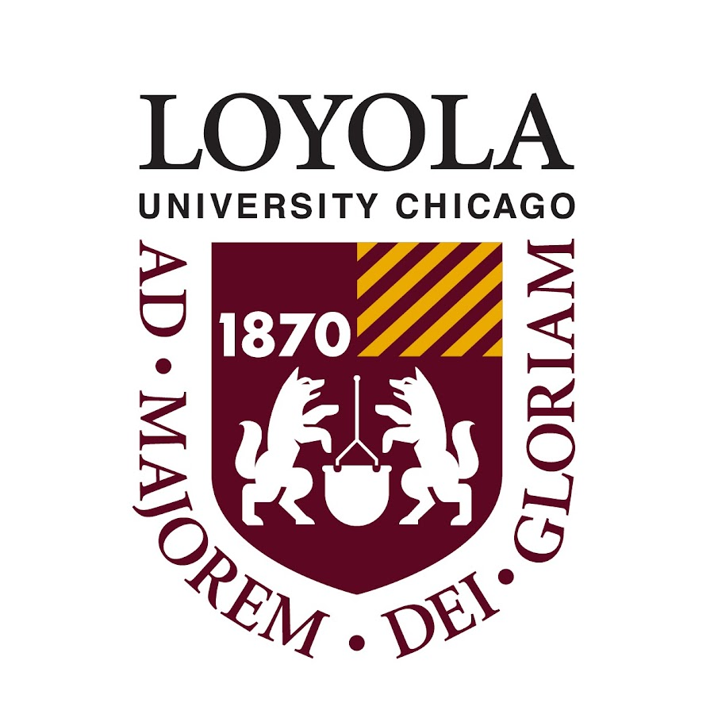

Google ASDI Intern
I was an Associate Software Developer Intern at Google in Summer 2025.
Accomplishments:
Designed and implemented a user-facing feature for the Android Phone App's Calling Card for over 600 million daily active users and over 7 billion daily calls.
Engineered (end-to-end) a transformative feature used for Android's production code, working closely with UX designers and tech leads to iteratively develop a positive user experience.
Gained proficiency with multi-threaded applications, data services, and state management, as well as navigating internal tools and Google's 2 billion line codebase.
Created an internal API accessible across the Android Phone App's teams that will make it easier for applications to support accessibility for Android's ~800 million color blind and low-vision users.
Research Intern (LUC)
Detailed explanation of your research at the Software and Systems Lab...
Chrome Support Intern

I was an intern at my high school's Chromebook help desk from 2021 to 2024. Responsibilities: Delivered front line customer support within the school's central help desk to support students and staff with their Chromebook computers Checked in/out loaners and customer devices coming in/out of repair Diagnosed and performed troubleshooting on out-of-warranty Chromebooks Performed technical repairs through software updates and replacement of major parts including batteries, screens, keyboards, motherboards, and other modular components